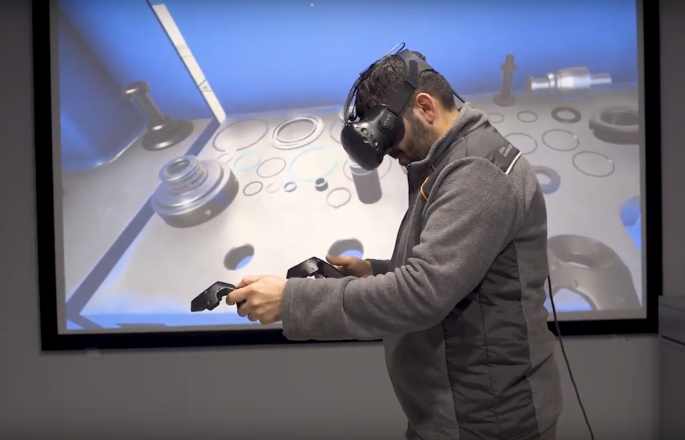

Thesis: virtual reality, a real opportunity for employee training?
Adaptability is a key to business success. In the current context of perpetual change, it is even more
critical. To demonstrate flexibility, the acquisition and adaptation of skills appear to be a major
challenge for both companies and employees. Workforce training becomes a strategic investment.
Virtual reality is a relatively new train tool. Today, more and more companies
use this technology even if it remains a quite rare way to improve employees' skills.
The analyses carried out in my master degree thesis allow to conclude that virtual reality is a real
opportunity
employee training. However, to fully benefit from the potential of this technology,companies need to think
carefully about its implementation.

VR has many advantages in terms of training
First, VR is an exceptionally immersive and interactive technology. Those characteristics
facilitate the user's concentration and
learning. Employees integrate better, more naturally and in the long term the skills. The implementation
of these skills is also favored since the learning takes place in a virtual world as close as possible
to the employee's real work environment.
Second, VR offers great freedom in modeling environments. It makes it quite easy to adapt
learning
company's needs. Thanks to VR, training in unsafe work environments is possible without risking
employees' health.
Third, like MOOCs, VR makes it possible to train employees on a large scale. Most of VR costs are
fixed
costs so it is an economically favourable tool when the diffusion scale is sufficient.
Finally, companies can monitor employees' performance thanks to the collection of a wide range of
biometric data. This tracking ability can be precious to know as unbiased as possible employees' skills.
Allowing companies to effectively train employees and thus to be flexible and adaptable to their
environment, VR offers the ability to make human resources a real competitive advantage.
However, it is important to pay attention to the limits of VR
As it stands, virtual reality is not perfectly relevant in all contexts and for all skills.
In the current state of technology, it is proving to be more relevant in the development of technical
skills
(industrial sector in particular) and for certain soft skills for which the environment has a strong
impact.
Companies have to pay attention to the implementation of VR and its integration into the information
system. VR equipment sensors collect lots of data about employees and their performance. To
properly
exploit these data, companies have to integrate the whole VR elements into the IS. It would be a shame
not to fully benefit from these data as they are quite exceptional and precious to better know and
monitor HR.
It is also important to keep in mind the risks related to the use of virtual reality. Three main types
of
risks have to be considered. Firt are legal risks. They mainly relate to data management and
compliance with the GDPR. Second are physical risks. VR can cause nausea, headaches, and even
injuries if the real
environment, in which the user is and does not see due to the cask, is not adapted. Companies can be
held legally responsible for these injuries, so they must take special care to avoid them by thinking
about the best way to implement VR. Last are mental risks. There are indeed risks of addiction or
manipulation of VR users by the creators of the application. VR users, since they are strongly immersed
in the environment are particularly sensitive to what they see/live through this medium.